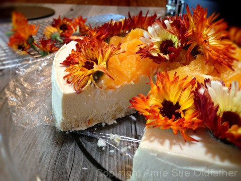
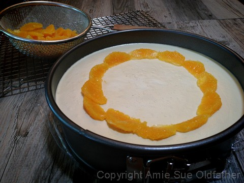
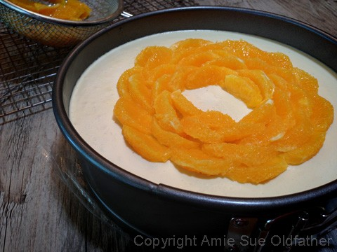
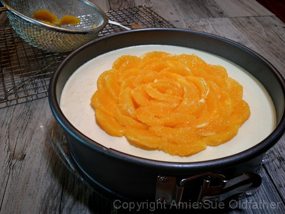
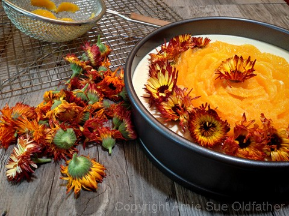
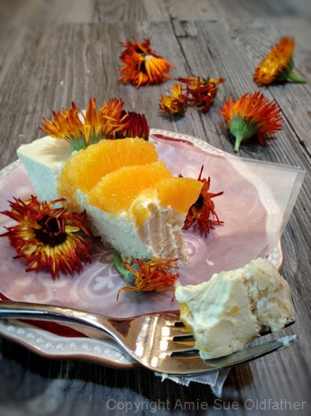
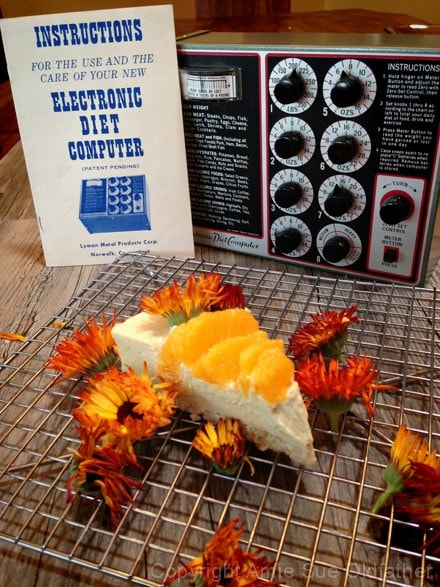

Orange Creamsicle Cheesecake
~ raw, vegan, gluten-free ~
This recipe turned out just as I had imagined it in my head. Beautiful, light, creamy, slightly sweet, and slap-me-into-next-Tuesday delicious! Although cheesecakes are nothing new, I never grow tired of creating them. This recipe is cashew-based which gives it that perfect creaminess and the citrus gave it, as Bob described, a real lightness. And the crust…. man o’ man, this crust I think, has become one of my favorites.

I created this pie for some friends of ours, Suzie and Harry. Of course, I had to apologize to their daughter, Sheila when she came to pick it up, as it was missing a slice. I explained that in my house, one piece always gets sacrificed for the sake of photography. hehe
I have a little ritual that I do with just about every dessert I make. I always, always, always, make a mini one alongside the main one. So for example, when I made this cheesecake, I took a pinch of the crust and pressed it into a single-serving dish. I then took about 1/4-1/2 cup of the batter and poured it over the crust and then used the remainder for the main cake. This little one is always for Bob. I also found this to helpful because once the dessert has firmed up in the fridge and is ready to eat… you have a sampler to try just to make sure everything turned out great before serving it to others.
You can decorate this cheesecake any way you wish. I used edible flowers that I bought from Whole Foods. I made this in Tucson when we were there and well, going out to the yard and picking cacti for decorating with wasn’t going to cut it. So, I had to do my flower picking in Whole Foods. hehe If you use fresh flowers, make sure that they are pesticide free! Have a blessed day, I insist!
Ingredients:
Yields 9″ springform pan

Crust:
- 1/2 cup (70 g) rolled, gluten-free oats
- 1 cup (137 g) cashews or almonds, soaked and skinned
- 2/3 cup (60 g) shredded coconut
- 1/4 tsp (2 g) Himalayan pink salt
- 1/4 tsp (1 g) liquid stevia
- 6 Tbsp (102g) coconut butter, softened
Cheesecake filling:
- 3 cups (407 g) raw cashews, soaked for 2 hours
- 2 cups (480 g) fresh orange juice
- 1/4 cup (65 g) maple syrup
- 2 tsp (10 g) liquid vanilla
- 1/4 tsp (2 g) Himalayan pink salt
- 3 Tbsp (19 g) sunflower lecithin powder or liquid
- 3/4 cup (148 g) coconut oil, melted
Preparation:
Crust:
- In the food processor, fitted with the “S” blade, pulse the oats, almonds into small pieces.
- Add coconut, stevia, coconut butter, and salt.
- Process all ingredients until the crust starts to rise on the sides of the bowl.
- Be sure to stop and scrape the sides down.
- Assemble the Springform pan with the lip of the disk facing down. This will help you when removing the cheesecake from the pan, not having to fight with the lip). Lightly grease the pan with coconut oil or line with plastic wrap.
- Distribute the crust evenly on the bottom of the pan, using even and gentle pressure. You can either make the crust just on the bottom of the pan or you can also bring it up the sides. It is up to you.
- Set aside while you make the cheesecake batter.
Filling:
- After soaking the cashews, drain and rinse.
- You can skip the soaking process if pressed for time. If you do, you can omit the lecithin, though I still recommend it for the health benefits.
- Soaking the cashews will make them softer to blend and reduce the phytic acid in them.
- Do not skip the soaking process if you don’t own a high powered blender.
- Add to a high-speed blender; cashews, orange juice, maple syrup, vanilla, and salt. Blend until creamy. This can take 3-5 minutes depending on your machine. Step occasionally to test for grittiness. Feel grit? Keep blending.
- While the blender is running and a vortex is formed, drizzle in the coconut oil and lecithin. Resume blending until all is well incorporated.
- Pour the batter into the Springform pan. Lightly tap the pan on the countertop to help work out any air bubbles that may be trapped in the batter. Be careful, sometimes it can “burp” and spray little cheesecake droplets on your shirt. :)
- Place in the fridge overnight to chill or in the freezer. Remove and decorate. I used edible flowers and orange segments. How to slice a cake. Click here.
- Storage – Keep the cake in the fridge or freezer when you are not eating it. It will keep for 3-5 days in the fridge or 1-2 months in the freezer. Be sure to seal it well so it doesn’t absorb fridge odors.





Check out this gizmo! Just what every kitchen needs? Just when I think I own every kitchen gadget made, along comes this. hehe

© AmieSue.com